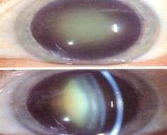
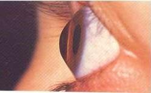

Refraction · Myopia
Myopia (Short Sightedness): definition, far point & etiology
When the eye is at rest (accommodation is completely relaxed); parallel rays come to a focus in front of the retina.
The far point (Punctum Remotum - PR) of the myopic eye
- Rays coming from a point on the retina:
- Leave the eye convergent.
- And meet at a point nearer than infinity.



Etiology
- Axial myopia: An increase in the axial length of the eye.
- The most common.
- Each 1mm increase or decrease in the axial length of the eye; results in 3 D change of refraction.
- Refractive myopia: Increased refractive power of the eye.
- It includes 2 types:
- Curvature myopia: Increase in the curvature of the cornea (keratoconus) or the lens (lenticonus)
- Index myopia: Increase in the R.I. of lens e.g. senile nuclear sclerosis and cataract & Hyperglycemia (uncontrolled diabetes).
- It includes 2 types:
- Abnormal position of the lens: e.g. anterior dislocation.